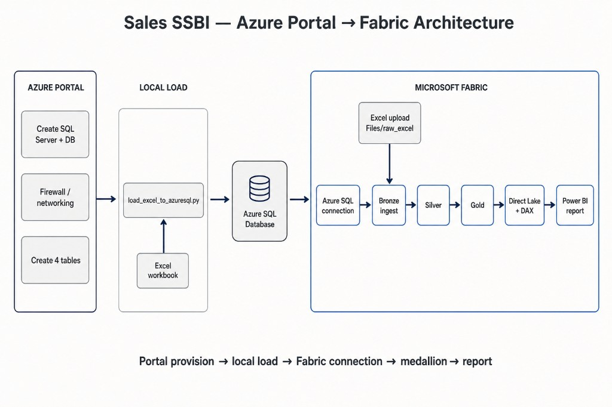

Career · BI Enablement · Fabric · Purview
83 practiced answers — Sales SSBI enablement plus Fabric, JSON→Bronze ingestion, Purview, Snowflake, Spark, Parquet, star schema, and data-engineering debugging.

Talk track: Portal provision → local load (load_excel_to_azuresql.py) → Azure SQL → Fabric connection → Bronze (plus Excel upload to Files/raw_excel) → Silver → Gold → Direct Lake + DAX → Power BI report.
load_excel_to_azuresql.py
Open full architecture notes → mermaid diagrams, Bronze/Silver/Gold contracts, dual-track local ↔ Fabric, and runbook phases.